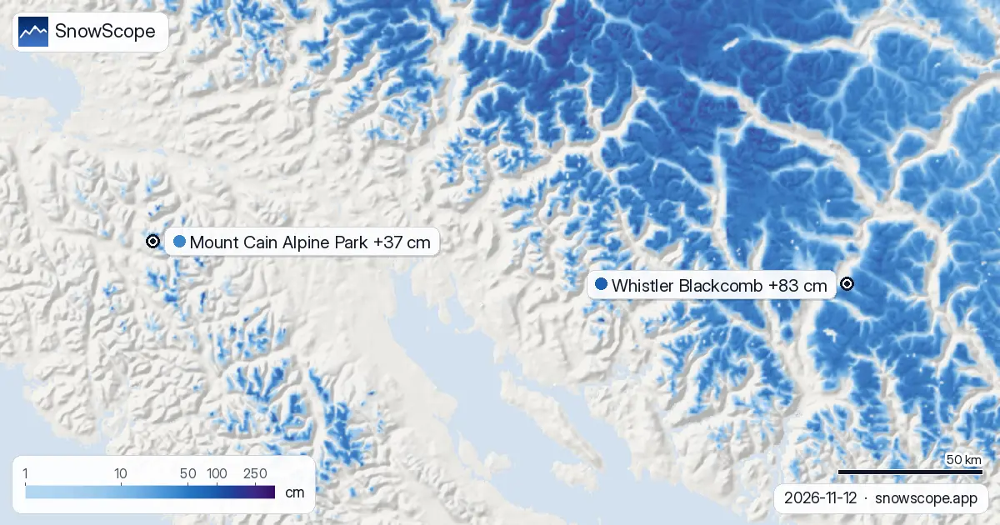
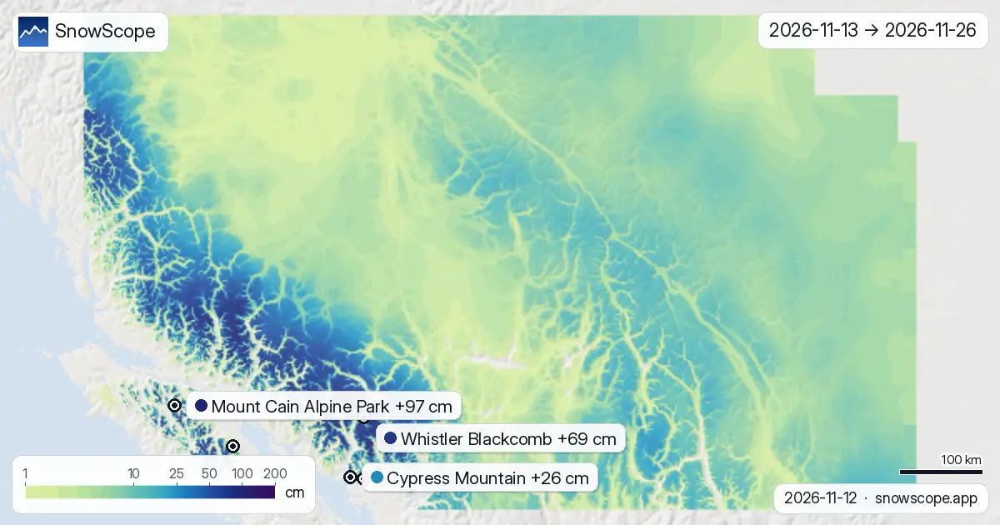

التلج فغرب كندا: Big White فالمقدمة ب 91 سم (3 نونبر)
أكثر تلج فغرب كندا كاين ف Big White: تقريبا 91 سم فالجهة الفوقانية، حسب الموديل ديال التلج ديالنا. من بعدها Silver Star (84 سم) و Harper Mountain (74 سم). 51 محطة من 57 فغرب كندا فيهم التلج فالجهة الفوقانية اليوم، والموديل ديالنا كيحسب 329280 كم² ديال الأرض اللي فيها التلج.
شوف توقعات التلج مباشرة ديال Big White فالتطبيق ديال SnowScopeالعلو ديال التلج، التنبيهات والخريطة 3D، فابور.
فين كاين التلج اليوم
المساحة اللي فيها التلج دازت من 370180 كم² نهار 1 نونبر ل 329280 كم² اليوم، والتوقعات ديالنا كتعطي 302380 كم² نهار 6 نونبر.
العلو مهم: ف Big White، الموديل ديالنا كيعطي 58 سم فالفوق (2271 م)، 8 سم فالوسط (1891 م) و 0 سم فالتحت (1512 م).
| المحطة | العلو ديال التلج | تلج جديد، 72 س | جاي، الأيام الجاية | الفوق |
|---|---|---|---|---|
| Big White | 91 سم | 0 سم | 2 سم | 2271 م |
| Silver Star | 84 سم | 0 سم | 3 سم | 1886 م |
| Harper Mountain | 74 سم | 0 سم | 1 سم | 1483 م |
| Mount Cain Alpine Park | 68 سم | 3 سم | 31 سم | 1616 م |
| Whistler Blackcomb | 61 سم | 1 سم | 25 سم | 2259 م |

شنو قاسو المحطات
الأرقام ديال المحطات ديال التزلج تقديرات ديال الموديل للجهة الفوقانية؛ محطات القياس كتقيس فنقطة وحدة، فالتاريخ المكتوب.
مقارنة مع الشتوات اللي فاتو
بداية مزيانة ف Big White: على علو 1891 م، الموديل ديالنا فيه اليوم 39 سم، أكثر من هاد التاريخ ف 43 من 46 ديال الشتوات اللي فاتو (العادي: 13 سم).
بداية مزيانة ف Harper Mountain: على علو 1283 م، الموديل ديالنا فيه اليوم 53 سم، أكثر من هاد التاريخ ف 46 من 46 ديال الشتوات اللي فاتو (العادي: 2 سم).
شنو جاي
حتى ل 6 نونبر، التوقعات ديالنا كتعطي 31 سم ف Mount Cain Alpine Park، 25 سم ف Whistler Blackcomb و 3 سم ف Silver Star.
ف Big White، علو الجليد غادي يكون بين 1120 م و 2600 م نهار 3 نونبر، فوق أعلى نقطة فالمحطة (2271 م): داك النهار يمكن تكون الشتا ولا تلج مبلول فكاع البيستات.
التوقعات ديال شي أيام يمكن تتبدل: عاود شوف الخريطة نهار قبل ما تسافر.
نصايح للي كيتزلجو
- التلج فالخريطة ماكيعنيش بلي المحطة محلولة: شوف التيليسييج والتواريخ فالموقع ديال المحطة.
- التلج ديال بداية الموسم رقيق. بقى فالبيستات المحلولة والمدكوكة: الحجر والربيع يمكن يكونو تحت نيشان.
- قلب على التلج فالعلو وفالجهات اللي كتشوف للشمال: كيحافظو عليه كثر، والجهات اللي كتشوف للجنوب كيمشي ليهم بالشمس.
- قبل ما تخرج من البيست ولا دير جولة، قرا النشرة الرسمية ديال الانهيارات (الروابط لتحت).
- فعّل تنبيه ديال التلج الطري فالتطبيق ديال SnowScope باش تعرف إمتى Big White يجيها تلج جديد.
على هاد الأرقام
العلو ديال التلج فالمحطات هو أكثر تلج فالجهة الفوقانية حسب الموديل ديال التلج ديال SnowScope (تقريبا 1 كم، الحساب ديال 3 نونبر)؛ هادو تقديرات لمنطقة، ماشي قياس فنقطة وحدة. الأرقام ديال محطات القياس مقاسة فالتاريخ المكتوب. التوقعات يمكن تتبدل. ديما شوف النشرة الرسمية ديال الانهيارات قبل ما تخرج من البيست.
النشرات الرسمية ديال الانهيارات: Avalanche Canada
كيفاش تستاشهد بهاد المقال
للبحث، التعليم ولا الصحافة: الأرقام والرسومات تقدر تعاود تخدم بيهم بحرية تحت CC BY 4.0 مع هاد الاستشهاد.
SnowScope (2026), التلج فغرب كندا: Big White فالمقدمة ب 91 سم (3 نونبر), https://snowscope.app/blog/ar/2026/11/western-canada-snow-depth-today-3-november-2026.html, تشاف ف 2026-11-03
SnowScope (Atlas Labs). (2026, November 3). التلج فغرب كندا: Big White فالمقدمة ب 91 سم (3 نونبر). SnowScope snow reports. https://snowscope.app/blog/ar/2026/11/western-canada-snow-depth-today-3-november-2026.html
BibTeX
@misc{snowscope2026westerncanadasnowdepthto,
author = {{SnowScope (Atlas Labs)}},
title = {التلج فغرب كندا: Big White فالمقدمة ب 91 سم (3 نونبر)},
year = {2026},
month = nov,
howpublished = {\url{https://snowscope.app/blog/ar/2026/11/western-canada-snow-depth-today-3-november-2026.html}},
note = {Published 2026-11-03 16:31 UTC; accessed 2026-11-03}
}· CC BY 4.0 · الطريقة، الداتا والأدوات →
Big White: التلج والحرارة حسب العلو، هاد الشتا مقارنة مع اللي فاتت (الأدوات) →
تابع Big White
فابور: ميساج ملي يجي التلج، والتوقعات كل صباح.
تقارير أخرى ديال التلج

Mount Cain Alpine Park: شحال جاي ديال التلج؟ 37 سم حتى ل 15 نونبر. شحال ديال التلج جاي فغرب كندا، وفين؟ حتى ل 15 نونبر، التوقعات ديالنا كتعطي 83 سم ف …

14 يوم ديال التلج الجديد فخريطة وحدة، من 13 نونبر حتى ل 26 نونبر، لكل جبل فغرب كندا: هادشي اللي كيتوقعو جوج الموديلات العالمية اللي كيوصلو لجوج …

حتى ل 8 نونبر، التوقعات ديالنا كتعطي 94 سم ف Whistler Blackcomb، 93 سم ف Ski Callaghan و 70 سم ف Tweedsmuir Ski Club. الأرقام ديال المحطات ديال …